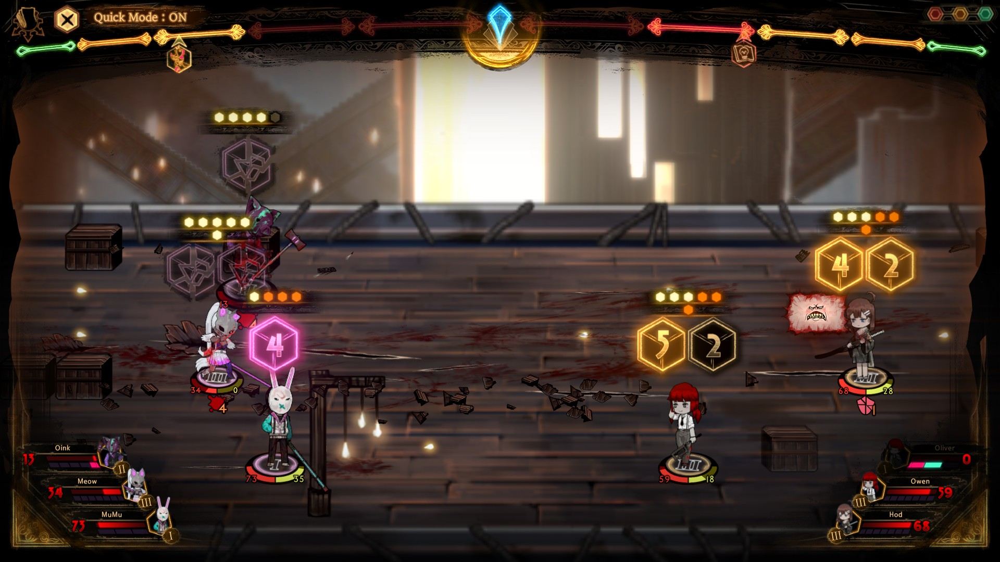
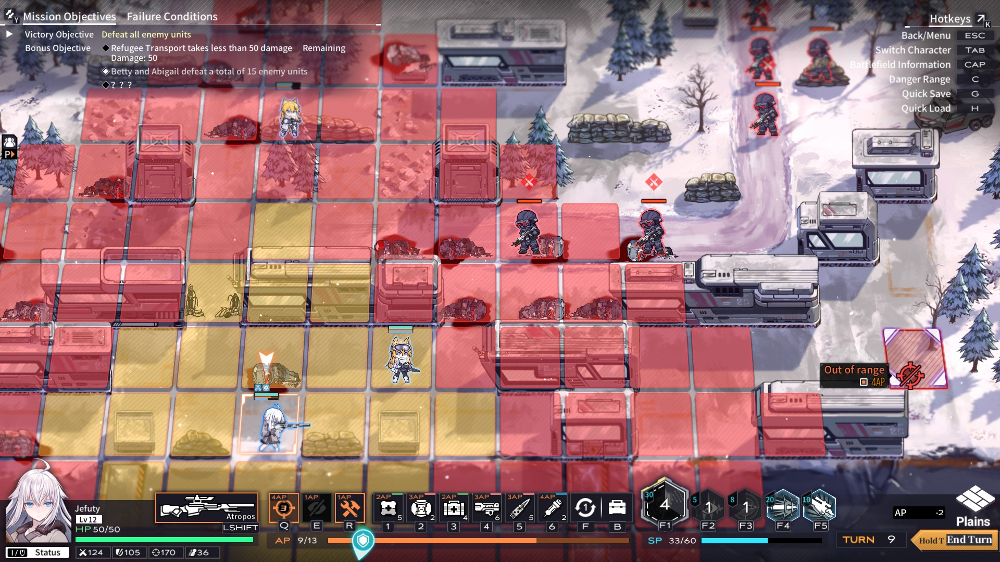
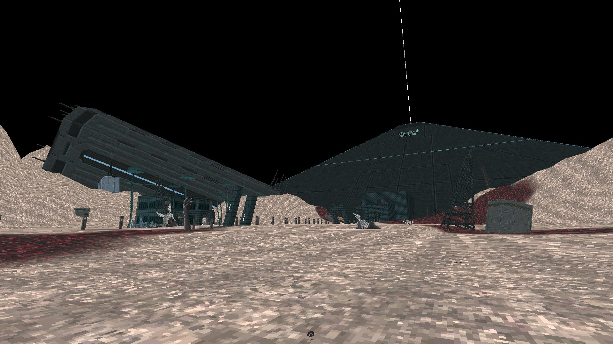

Library of ruina’s freedom of deck building is my favorite part of the game. Every single character you fight you get basically exactly what they had during there fight. This allows you to mix and match a bunch of different cards and passives to create really strong and fun builds.

My favorite part about reverse collaspe: code name bakery is how the game made me use the consumable items that are in the game. A lot of the time I find in most games I tend to avoid using consumable items until the right moment but the moment never comes so I avoid using the vaste majority of items in a game. Reverse collaspe avoided this for me by creating the encounters in a way where not using the items would much harder than just using them to win. This created a really fun resource management where I had to be smart about how I spend my resources.

One of my favorite aspects of Beyond Citdel is the progression of how you play from start to end. The game starts out as a slow paced tactical shooter where any mistake or missed enemy can quicky kill you and force you to restart. But as the game progressess and you get better armorer and better weapon and more upgrades the becomes much more fast paced and more like a boomer shooter.